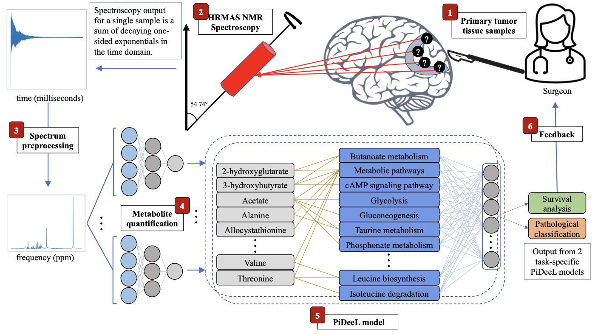

Gün Kaynar, D Cakmakci, C Bund, J Todeschi, IJ Namer, AE Cicek
Bioinformatics 39 (11), 2023
Online assessment of tumor characteristics during surgery is important and has the potential to establish an intra-operative surgeon feedback mechanism. With the availability of such feedback, surgeons could decide to be more liberal or conservative regarding the resection of the tumor. While there are methods to perform metabolomics-based tumor pathology prediction, their model complexity and predictive performance is limited by the small dataset sizes. In this study, we propose a metabolic pathway-informed deep learning model (PiDeeL) to perform survival analysis and pathology assessment based on metabolite concentrations. We show that incorporating pathway information into the model architecture substantially reduces parameter complexity and achieves better survival analysis and pathological classification performance. PiDeeL improves tumor pathology prediction performance of the state-of-the-art in terms of the Area Under the ROC Curve by 3.38% and the Area Under the Precision–Recall Curve by 4.06%. Similarly, with respect to the time-dependent concordance index (c-index), PiDeeL achieves better survival analysis performance (improvement of 4.3%) when compared to the state-of-the-art. Moreover, importance analyses performed on input metabolite features as well as pathway-specific neurons of PiDeeL provide insights into tumor metabolism.
